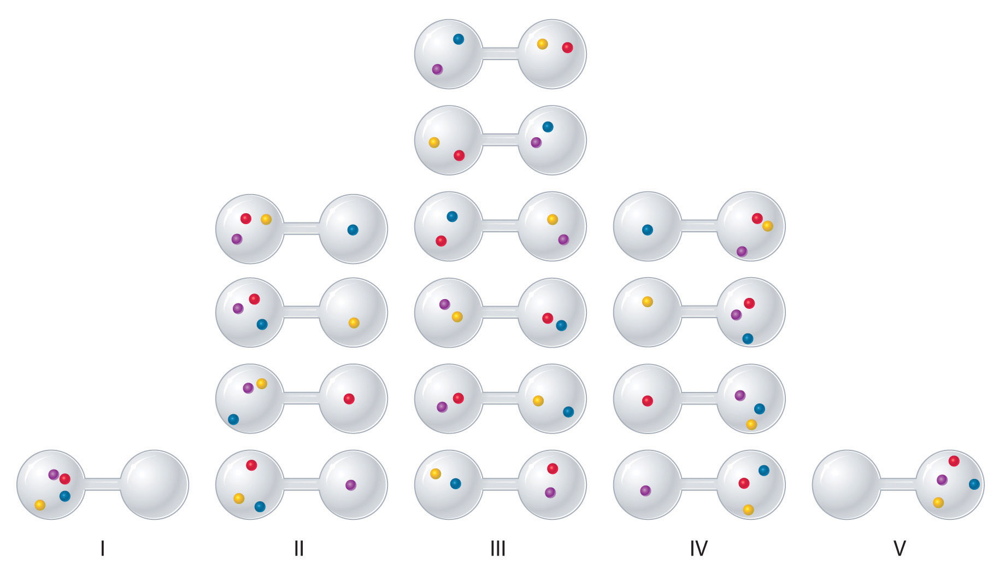
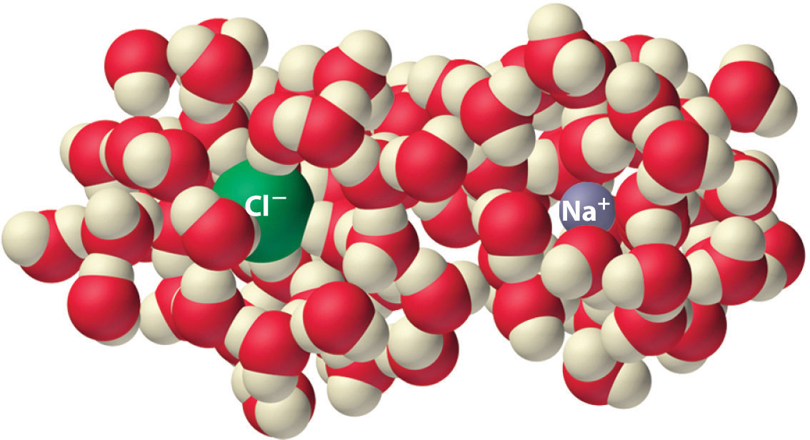
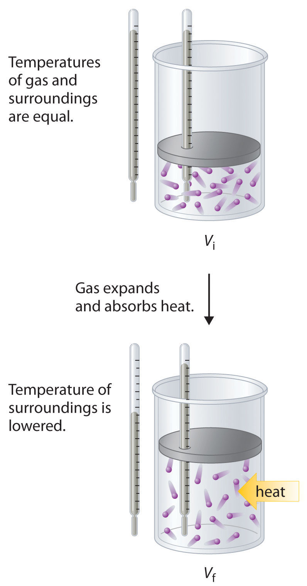
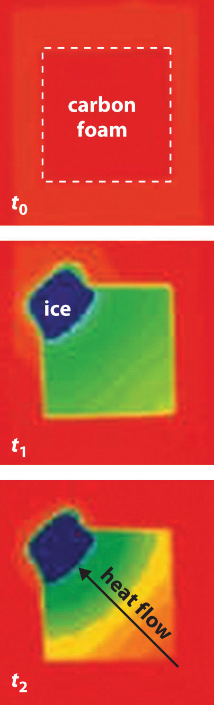

The first law of thermodynamics governs changes in the state function we have called internal energy (E). According to Section 18.2 "The First Law of Thermodynamics", changes in the internal energy (ΔE) are closely related to changes in the enthalpy (ΔH), which is a measure of the heat flow between a system and its surroundings at constant pressure. You also learned in Chapter 5 "Energy Changes in Chemical Reactions" that the enthalpy change for a chemical reaction can be calculated using tabulated values of enthalpies of formation. This information, however, does not tell us whether a particular process or reaction will occur spontaneously.
Let’s consider a familiar example of spontaneous change. If a hot frying pan that has just been removed from the stove is allowed to come into contact with a cooler object, such as cold water in a sink, heat will flow from the hotter object to the cooler one, in this case usually releasing steam. Eventually both objects will reach the same temperature, at a value between the initial temperatures of the two objects. This transfer of heat from a hot object to a cooler one obeys the first law of thermodynamics: energy is conserved.
Now consider the same process in reverse. Suppose that a hot frying pan in a sink of cold water were to become hotter while the water became cooler. As long as the same amount of thermal energy was gained by the frying pan and lost by the water, the first law of thermodynamics would be satisfied. Yet we all know that such a process cannot occur: heat always flows from a hot object to a cold one, never in the reverse direction. That is, by itself the magnitude of the heat flow associated with a process does not predict whether the process will occur spontaneously.
For many years, chemists and physicists tried to identify a single measurable quantity that would enable them to predict whether a particular process or reaction would occur spontaneously. Initially, many of them focused on enthalpy changes and hypothesized that an exothermic process would always be spontaneous. But although it is true that many, if not most, spontaneous processes are exothermic, there are also many spontaneous processes that are not exothermic. For example, at a pressure of 1 atm, ice melts spontaneously at temperatures greater than 0°C, yet this is an endothermic process because heat is absorbed. Similarly, many salts (such as NH4NO3, NaCl, and KBr) dissolve spontaneously in water even though they absorb heat from the surroundings as they dissolve (i.e., ΔHsoln > 0). Reactions can also be both spontaneous and highly endothermic, like the reaction of barium hydroxide with ammonium thiocyanate shown in Figure 18.6 "An Endothermic Reaction".
Figure 18.6 An Endothermic Reaction

The reaction of barium hydroxide with ammonium thiocyanate is spontaneous but highly endothermic, so water, one product of the reaction, quickly freezes into slush. When water is placed on a block of wood under the flask, the highly endothermic reaction that takes place in the flask freezes water that has been placed under the beaker, so the flask becomes frozen to the wood.
Thus enthalpy is not the only factor that determines whether a process is spontaneous. For example, after a cube of sugar has dissolved in a glass of water so that the sucrose molecules are uniformly dispersed in a dilute solution, they never spontaneously come back together in solution to form a sugar cube. Moreover, the molecules of a gas remain evenly distributed throughout the entire volume of a glass bulb and never spontaneously assemble in only one portion of the available volume. To help explain why these phenomena proceed spontaneously in only one direction requires an additional state function called entropy (S)The degree of disorder in a thermodynamic system, which is directly proportional to the possible number of microstates., a thermodynamic property of all substances that is proportional to their degree of disorder. In Chapter 13 "Solutions", we introduced the concept of entropy in relation to solution formation. Here we further explore the nature of this state function and define it mathematically.
Chemical and physical changes in a system may be accompanied by either an increase or a decrease in the disorder of the system, corresponding to an increase in entropy (ΔS > 0) or a decrease in entropy (ΔS < 0), respectively. As with any other state function, the change in entropy is defined as the difference between the entropies of the final and initial states: ΔS = Sf − Si.
When a gas expands into a vacuum, its entropy increases because the increased volume allows for greater atomic or molecular disorder. The greater the number of atoms or molecules in the gas, the greater the disorder. The magnitude of the entropy of a system depends on the number of microscopic states, or microstates, associated with it (in this case, the number of atoms or molecules); that is, the greater the number of microstates, the greater the entropy.
We can illustrate the concepts of microstates and entropy using a deck of playing cards, as shown in Figure 18.7 "Illustrating Low- and High-Entropy States with a Deck of Playing Cards". In any new deck, the 52 cards are arranged by four suits, with each suit arranged in descending order. If the cards are shuffled, however, there are approximately 1068 different ways they might be arranged, which corresponds to 1068 different microscopic states. The entropy of an ordered new deck of cards is therefore low, whereas the entropy of a randomly shuffled deck is high. Card games assign a higher value to a hand that has a low degree of disorder. In games such as five-card poker, only 4 of the 2,598,960 different possible hands, or microstates, contain the highly ordered and valued arrangement of cards called a royal flush, almost 1.1 million hands contain one pair, and more than 1.3 million hands are completely disordered and therefore have no value. Because the last two arrangements are far more probable than the first, the value of a poker hand is inversely proportional to its entropy.
Figure 18.7 Illustrating Low- and High-Entropy States with a Deck of Playing Cards

An new, unshuffled deck (top) has only a single arrangement, so there is only one microstate. In contrast, a randomly shuffled deck (bottom) can have any one of approximately 1068 different arrangements, which correspond to 1068 different microstates.
We can see how to calculate these kinds of probabilities for a chemical system by considering the possible arrangements of a sample of four gas molecules in a two-bulb container (Figure 18.8 "The Possible Microstates for a Sample of Four Gas Molecules in Two Bulbs of Equal Volume"). There are five possible arrangements: all four molecules in the left bulb (I); three molecules in the left bulb and one in the right bulb (II); two molecules in each bulb (III); one molecule in the left bulb and three molecules in the right bulb (IV); and four molecules in the right bulb (V). If we assign a different color to each molecule to keep track of it for this discussion (remember, however, that in reality the molecules are indistinguishable from one another), we can see that there are 16 different ways the four molecules can be distributed in the bulbs, each corresponding to a particular microstate. As shown in Figure 18.8 "The Possible Microstates for a Sample of Four Gas Molecules in Two Bulbs of Equal Volume", arrangement I is associated with a single microstate, as is arrangement V, so each arrangement has a probability of 1/16. Arrangements II and IV each have a probability of 4/16 because each can exist in four microstates. Similarly, six different microstates can occur as arrangement III, making the probability of this arrangement 6/16. Thus the arrangement that we would expect to encounter, with half the gas molecules in each bulb, is the most probable arrangement. The others are not impossible but simply less likely.
Figure 18.8 The Possible Microstates for a Sample of Four Gas Molecules in Two Bulbs of Equal Volume
There are 16 different ways to distribute four gas molecules between the bulbs, with each distribution corresponding to a particular microstate. Arrangements I and V each produce a single microstate with a probability of 1/16. This particular arrangement is so improbable that it is likely not observed. Arrangements II and IV each produce four microstates, with a probability of 4/16. Arrangement III, with half the gas molecules in each bulb, has a probability of 6/16. It is the one encompassing the most microstates, so it is the most probable.
Instead of four molecules of gas, let’s now consider 1 L of an ideal gas at standard temperature and pressure (STP), which contains 2.69 × 1022 molecules (6.022 × 1023 molecules/22.4 L). If we allow the sample of gas to expand into a second 1 L container, the probability of finding all 2.69 × 1022 molecules in one container and none in the other at any given time is extremely small, approximately The probability of such an occurrence is effectively zero. Although nothing prevents the molecules in the gas sample from occupying only one of the two bulbs, that particular arrangement is so improbable that it is never actually observed. The probability of arrangements with essentially equal numbers of molecules in each bulb is quite high, however, because there are many equivalent microstates in which the molecules are distributed equally. Hence a macroscopic sample of a gas occupies all of the space available to it, simply because this is the most probable arrangement.
A disordered system has a greater number of possible microstates than does an ordered system, so it has a higher entropy. This is most clearly seen in the entropy changes that accompany phase transitions, such as solid to liquid or liquid to gas. As you know from Chapter 11 "Liquids", Chapter 12 "Solids", and Chapter 13 "Solutions", a crystalline solid is composed of an ordered array of molecules, ions, or atoms that occupy fixed positions in a lattice, whereas the molecules in a liquid are free to move and tumble within the volume of the liquid; molecules in a gas have even more freedom to move than those in a liquid. Each degree of motion increases the number of available microstates, resulting in a higher entropy. Thus the entropy of a system must increase during melting (ΔSfus > 0). Similarly, when a liquid is converted to a vapor, the greater freedom of motion of the molecules in the gas phase means that ΔSvap > 0. Conversely, the reverse processes (condensing a vapor to form a liquid or freezing a liquid to form a solid) must be accompanied by a decrease in the entropy of the system: ΔS < 0.
Entropy (S) is a thermodynamic property of all substances that is proportional to their degree of disorder. The greater the number of possible microstates for a system, the greater the disorder and the higher the entropy.
Experiments show that the magnitude of ΔSvap is 80–90 J/(mol·K) for a wide variety of liquids with different boiling points. However, liquids that have highly ordered structures due to hydrogen bonding or other intermolecular interactions tend to have significantly higher values of ΔSvap. For instance, ΔSvap for water is 102 J/(mol·K). Another process that is accompanied by entropy changes is the formation of a solution. As illustrated in Figure 18.9 "The Effect of Solution Formation on Entropy", the formation of a liquid solution from a crystalline solid (the solute) and a liquid solvent is expected to result in an increase in the number of available microstates of the system and hence its entropy. Indeed, dissolving a substance such as NaCl in water disrupts both the ordered crystal lattice of NaCl and the ordered hydrogen-bonded structure of water, leading to an increase in the entropy of the system. At the same time, however, each dissolved Na+ ion becomes hydrated by an ordered arrangement of at least six water molecules, and the Cl− ions also cause the water to adopt a particular local structure. Both of these effects increase the order of the system, leading to a decrease in entropy. The overall entropy change for the formation of a solution therefore depends on the relative magnitudes of these opposing factors. In the case of an NaCl solution, disruption of the crystalline NaCl structure and the hydrogen-bonded interactions in water is quantitatively more important, so ΔSsoln > 0.
Figure 18.9 The Effect of Solution Formation on Entropy
Dissolving NaCl in water results in an increase in the entropy of the system. Each hydrated ion, however, forms an ordered arrangement with water molecules, which decreases the entropy of the system. The magnitude of the increase is greater than the magnitude of the decrease, so the overall entropy change for the formation of an NaCl solution is positive.
Predict which substance in each pair has the higher entropy and justify your answer.
Given: amounts of substances and temperature
Asked for: higher entropy
Strategy:
From the number of atoms present and the phase of each substance, predict which has the greater number of available microstates and hence the higher entropy.
Solution:
Exercise
Predict which substance in each pair has the higher entropy and justify your answer.
Answer:
Changes in entropy (ΔS), together with changes in enthalpy (ΔH), enable us to predict in which direction a chemical or physical change will occur spontaneously. Before discussing how to do so, however, we must understand the difference between a reversible process and an irreversible one. In a reversible processA process in which every intermediate state between the extremes is an equilibrium state, regardless of the direction of the change., every intermediate state between the extremes is an equilibrium state, regardless of the direction of the change. In contrast, an irreversible processA process in which the intermediate states between the extremes are not equilibrium states, so change occurs spontaneously in only one direction. is one in which the intermediate states are not equilibrium states, so change occurs spontaneously in only one direction. As a result, a reversible process can change direction at any time, whereas an irreversible process cannot. When a gas expands reversibly against an external pressure such as a piston, for example, the expansion can be reversed at any time by reversing the motion of the piston; once the gas is compressed, it can be allowed to expand again, and the process can continue indefinitely. In contrast, the expansion of a gas into a vacuum (Pext = 0) is irreversible because the external pressure is measurably less than the internal pressure of the gas. No equilibrium states exist, and the gas expands irreversibly. When gas escapes from a microscopic hole in a balloon into a vacuum, for example, the process is irreversible; the direction of airflow cannot change.
Because work done during the expansion of a gas depends on the opposing external pressure (w = PextΔV), work done in a reversible process is always equal to or greater than work done in a corresponding irreversible process: wrev ≥ wirrev. Whether a process is reversible or irreversible, ΔE = q + w. Because E is a state function, the magnitude of ΔE does not depend on reversibility and is independent of the path taken. So
Equation 18.14
ΔE = qrev + wrev = qirrev + wirrevWork done in a reversible process is always equal to or greater than work done in a corresponding irreversible process: wrev ≥ wirrev.
In other words, ΔE for a process is the same whether that process is carried out in a reversible manner or an irreversible one. We now return to our earlier definition of entropy, using the magnitude of the heat flow for a reversible process (qrev) to define entropy quantitatively.
Because the quantity of heat transferred (qrev) is directly proportional to the absolute temperature of an object (T) (qrev ∝ T), the hotter the object, the greater the amount of heat transferred. Moreover, adding heat to a system increases the kinetic energy of the component atoms and molecules and hence their disorder (ΔS ∝ qrev). Combining these relationships for any reversible process,
Equation 18.15
Because the numerator (qrev) is expressed in units of energy (joules), the units of ΔS are joules/kelvin (J/K). Recognizing that the work done in a reversible process at constant pressure is wrev = −PΔV, we can express Equation 18.14 as follows:
Equation 18.16
ΔE = qrev + wrev = TΔS − PΔVThus the change in the internal energy of the system is related to the change in entropy, the absolute temperature, and the PV work done.
To illustrate the use of Equation 18.15 and Equation 18.16, we consider two reversible processes before turning to an irreversible process. When a sample of an ideal gas is allowed to expand reversibly at constant temperature, heat must be added to the gas during expansion to keep its T constant (Figure 18.10 "Expansion of Gas at Constant Temperature"). The internal energy of the gas does not change because the temperature of the gas does not change; that is, ΔE = 0 and qrev = −wrev. During expansion, ΔV > 0, so the gas performs work on its surroundings: wrev = −PΔV < 0. According to Equation 18.16, this means that qrev must increase during expansion; that is, the gas must absorb heat from the surroundings during expansion, and the surroundings must give up that same amount of heat. The entropy change of the system is therefore ΔSsys = +qrev/T, and the entropy change of the surroundings is ΔSsurr = −qrev/T. The corresponding change in entropy of the universe is then as follows:
Equation 18.17
Thus no change in ΔSuniv has occurred.
Figure 18.10 Expansion of Gas at Constant Temperature
In the initial state (top), the temperatures of a gas and the surroundings are the same. During the reversible expansion of the gas, heat must be added to the gas to maintain a constant temperature. Thus the internal energy of the gas does not change, but work is performed on the surroundings. In the final state (bottom), the temperature of the surroundings is lower because the gas has absorbed heat from the surroundings during expansion.
Now consider the reversible melting of a sample of ice at 0°C and 1 atm. The enthalpy of fusion of ice is 6.01 kJ/mol, which means that 6.01 kJ of heat are absorbed reversibly from the surroundings when 1 mol of ice melts at 0°C, as illustrated in Figure 18.11 "Thermograms Showing That Heat Is Absorbed from the Surroundings When Ice Melts at 0°C". The surroundings constitute a sample of low-density carbon foam that is thermally conductive, and the system is the ice cube that has been placed on it. The direction of heat flow along the resulting temperature gradient is indicated with an arrow. From Equation 18.15, we see that the entropy of fusion of ice can be written as follows:
Equation 18.18
Figure 18.11 Thermograms Showing That Heat Is Absorbed from the Surroundings When Ice Melts at 0°C
By convention, a thermogram shows cold regions in blue, warm regions in red, and thermally intermediate regions in green. When an ice cube (the system, dark blue) is placed on the corner of a square sample of low-density carbon foam with very high thermal conductivity, the temperature of the foam is lowered (going from red to green). As the ice melts, a temperature gradient appears, ranging from warm to very cold. An arrow indicates the direction of heat flow from the surroundings (red and green) to the ice cube. The amount of heat lost by the surroundings is the same as the amount gained by the ice, so the entropy of the universe does not change.
In this case, ΔSfus = (6.01 kJ/mol)/(273 K) = 22.0 J/(mol·K) = ΔSsys. The amount of heat lost by the surroundings is the same as the amount gained by the ice, so ΔSsurr = qrev/T = −(6.01 kJ/mol)/(273 K) = −22.0 J/(mol·K). Once again, we see that the entropy of the universe does not change:
ΔSuniv = ΔSsys + ΔSsurr = 22.0 J/(mol·K) − 22.0 J/(mol·K) = 0In these two examples of reversible processes, the entropy of the universe is unchanged. This is true of all reversible processes and constitutes part of the second law of thermodynamicsThe entropy of the universe remains constant in a reversible process, whereas the entropy of the universe increases in an irreversible (spontaneous) process.: the entropy of the universe remains constant in a reversible process, whereas the entropy of the universe increases in an irreversible (spontaneous) process.
The entropy of the universe increases during a spontaneous process.
As an example of an irreversible process, consider the entropy changes that accompany the spontaneous and irreversible transfer of heat from a hot object to a cold one, as occurs when lava spewed from a volcano flows into cold ocean water. The cold substance, the water, gains heat (q > 0), so the change in the entropy of the water can be written as ΔScold = q/Tcold. Similarly, the hot substance, the lava, loses heat (q < 0), so its entropy change can be written as ΔShot = −q/Thot, where Tcold and Thot are the temperatures of the cold and hot substances, respectively. The total entropy change of the universe accompanying this process is therefore
Equation 18.19
The numerators on the right side of Equation 18.19 are the same in magnitude but opposite in sign. Whether ΔSuniv is positive or negative depends on the relative magnitudes of the denominators. By definition, Thot > Tcold, so −q/Thot must be less than q/Tcold, and ΔSuniv must be positive. As predicted by the second law of thermodynamics, the entropy of the universe increases during this irreversible process. Any process for which ΔSuniv is positive is, by definition, a spontaneous one that will occur as written. Conversely, any process for which ΔSuniv approaches zero will not occur spontaneously as written but will occur spontaneously in the reverse direction. We see, therefore, that heat is spontaneously transferred from a hot substance, the lava, to a cold substance, the ocean water. In fact, if the lava is hot enough (e.g., if it is molten), so much heat can be transferred that the water is converted to steam (Figure 18.12 "Spontaneous Transfer of Heat from a Hot Substance to a Cold Substance").
Figure 18.12 Spontaneous Transfer of Heat from a Hot Substance to a Cold Substance
When molten lava flows into cold ocean water, so much heat is spontaneously transferred to the water that steam is produced.
Tin has two allotropes with different structures. Gray tin (α-tin) has a structure similar to that of diamond, whereas white tin (β-tin) is denser, with a unit cell structure that is based on a rectangular prism. At temperatures greater than 13.2°C, white tin is the more stable phase, but below that temperature, it slowly converts reversibly to the less dense, powdery gray phase. This phenomenon plagued Napoleon’s army during his ill-fated invasion of Russia in 1812: the buttons on his soldiers’ uniforms were made of tin and disintegrated during the Russian winter, adversely affecting the soldiers’ health (and morale). The conversion of white tin to gray tin is exothermic, with ΔH = −2.1 kJ/mol at 13.2°C.
Given: ΔH and temperature
Asked for: ΔS and relative degree of order
Strategy:
Use Equation 18.15 to calculate the change in entropy for the reversible phase transition. From the calculated value of ΔS, predict which allotrope has the more highly ordered structure.
Solution:
We know from Equation 18.15 that the entropy change for any reversible process is the heat transferred (in joules) divided by the temperature at which the process occurs. Because the conversion occurs at constant pressure, and ΔH and ΔE are essentially equal for reactions that involve only solids, we can calculate the change in entropy for the reversible phase transition where qrev = ΔH. Substituting the given values for ΔH and temperature in kelvins (in this case, T = 13.2°C = 286.4 K),
Exercise
Elemental sulfur exists in two forms: an orthorhombic form (Sα), which is stable below 95.3°C, and a monoclinic form (Sβ), which is stable above 95.3°C. The conversion of orthorhombic sulfur to monoclinic sulfur is endothermic, with ΔH = 0.401 kJ/mol at 1 atm.
Answer:
A measure of the disorder of a system is its entropy (S), a state function whose value increases with an increase in the number of available microstates. A reversible process is one for which all intermediate states between extremes are equilibrium states; it can change direction at any time. In contrast, an irreversible process occurs in one direction only. The change in entropy of the system or the surroundings is the quantity of heat transferred divided by the temperature. The second law of thermodynamics states that in a reversible process, the entropy of the universe is constant, whereas in an irreversible process, such as the transfer of heat from a hot object to a cold object, the entropy of the universe increases.
A Russian space vehicle developed a leak, which resulted in an internal pressure drop from 1 atm to 0.85 atm. Is this an example of a reversible expansion? Has work been done?
Which member of each pair do you expect to have a higher entropy? Why?
Determine whether each process is reversible or irreversible.
Determine whether each process is reversible or irreversible.
Explain why increasing the temperature of a gas increases its entropy. What effect does this have on the internal energy of the gas?
For a series of related compounds, does ΔSvap increase or decrease with an increase in the strength of intermolecular interactions in the liquid state? Why?
Is the change in the enthalpy of reaction or the change in entropy of reaction more sensitive to changes in temperature? Explain your reasoning.
Solid potassium chloride has a highly ordered lattice structure. Do you expect ΔSsoln to be greater or less than zero? Why? What opposing factors must be considered in making your prediction?
Aniline (C6H5NH2) is an oily liquid at 25°C that darkens on exposure to air and light. It is used in dying fabrics and in staining wood black. One gram of aniline dissolves in 28.6 mL of water, but aniline is completely miscible with ethanol. Do you expect ΔSsoln in H2O to be greater than, less than, or equal to ΔSsoln in CH3CH2OH? Why?
No, it is irreversible; no work is done because the external pressure is effectively zero.
Water has a highly ordered, hydrogen-bonded structure that must reorganize to accommodate hydrophobic solutes like aniline. In contrast, we expect that aniline will be able to disperse randomly throughout ethanol, which has a significantly less ordered structure. We therefore predict that ΔSsoln in ethanol will be more positive than ΔSsoln in water.
Liquid nitrogen, which has a boiling point of −195.79°C, is used as a coolant and as a preservative for biological tissues. Is the entropy of nitrogen higher or lower at −200°C than at −190°C? Explain your answer. Liquid nitrogen freezes to a white solid at −210.00°C, with an enthalpy of fusion of 0.71 kJ/mol. What is its entropy of fusion? Is freezing biological tissue in liquid nitrogen an example of a reversible process or an irreversible process?
Using the second law of thermodynamics, explain why heat flows from a hot body to a cold body but not from a cold body to a hot body.
One test of the spontaneity of a reaction is whether the entropy of the universe increases: ΔSuniv > 0. Using an entropic argument, show that the following reaction is spontaneous at 25°C:
4Fe(s) + 3O2(g) → 2Fe2O3(s)Why does the entropy of the universe increase in this reaction even though gaseous molecules, which have a high entropy, are consumed?
Calculate the missing data in the following table.
| Compound | ΔHfus (kJ/mol) | ΔSfus [J/(mol·K)] | Melting Point (°C) |
|---|---|---|---|
| acetic acid | 11.7 | 16.6 | |
| CH3CN | 8.2 | 35.9 | |
| CH4 | 0.94 | −182.5 | |
| CH3OH | 18.2 | −97.7 | |
| formic acid | 12.7 | 45.1 |
Based on this table, can you conclude that entropy is related to the nature of functional groups? Explain your reasoning.
Calculate the missing data in the following table.
| Compound | ΔHvap (kJ/mol) | ΔSvap [J/(mol·K)] | Boiling Point (°C) |
|---|---|---|---|
| hexanoic acid | 71.1 | 105.7 | |
| hexane | 28.9 | 85.5 | |
| formic acid | 60.7 | 100.8 | |
| 1-hexanol | 44.5 | 157.5 |
The text states that the magnitude of ΔSvap tends to be similar for a wide variety of compounds. Based on the values in the table, do you agree?